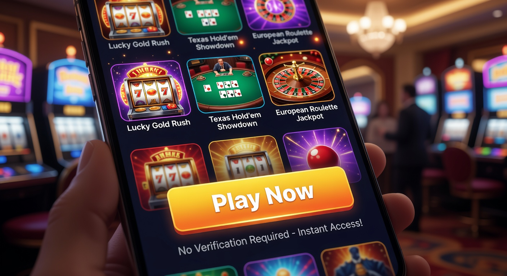
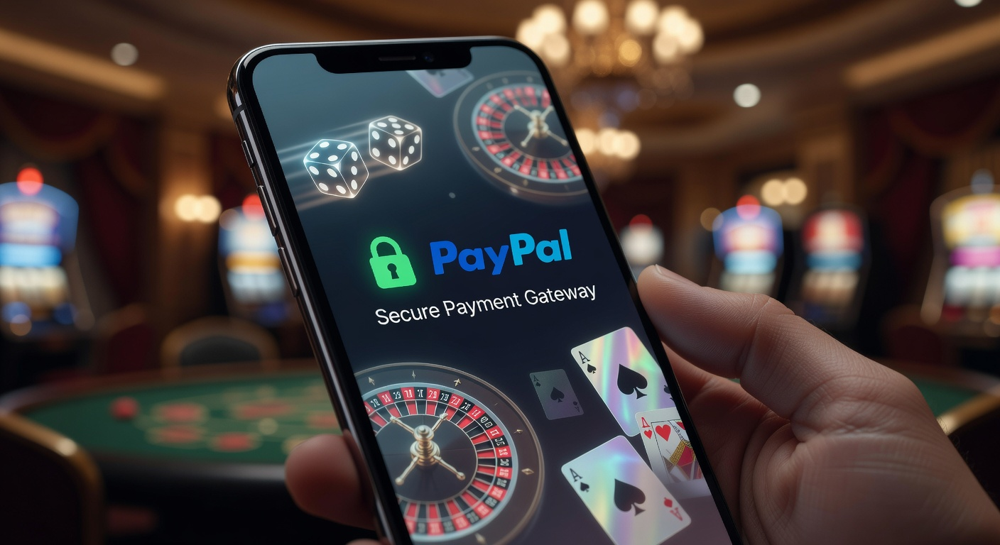
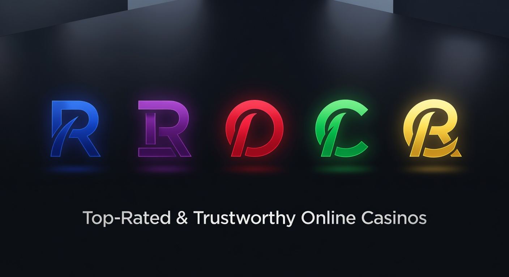
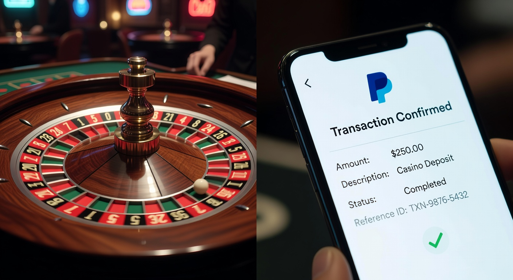
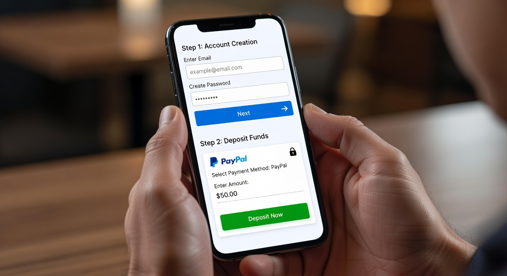

Migliori casinò online con paypal senza documento
Il panorama del gioco d'azzardo digitale nel 2026 ha raggiunto vette di efficienza tecnologica e velocità mai viste prima. Per i giocatori italiani, la ricerca dei migliori casinò online con paypal senza documento è diventata una priorità, spinta dal desiderio di immediatezza e privacy. In un'epoca in cui la digitalizzazione ha reso ogni processo istantaneo, attendere giorni per la verifica dell'identità appare ormai obsoleto. Molte piattaforme internazionali offrono oggi la possibilità di iniziare a divertirsi in pochi istanti, posticipando le procedure burocratiche più tediose.
La combinazione tra la sicurezza di un portafoglio elettronico leader mondiale e la flessibilità di portali che non richiedono l'invio immediato della carta d'identità crea un ecosistema ideale. In questa guida esploreremo come navigare tra le diverse opzioni disponibili, garantendo sempre la massima protezione per i propri fondi e per i dati personali. Scegliere i migliori casinò online con paypal senza documento significa puntare su brand che hanno investito massicciamente nell'esperienza utente e nella fluidità delle transazioni finanziarie.
È importante sottolineare che la normativa nel 2026 continua a evolversi per proteggere l'utente finale. Molti siti operanti con licenze internazionali, come quelle rilasciate a Curacao o dalla Malta Gaming Authority, permettono depositi veloci senza dover caricare file pesanti durante il primo login. Se state cercando un siti non aams senza documento, troverete che la praticità di PayPal è imbattibile per gestire il bankroll in modo intelligente e riservato.
Migliori casinò online con paypal senza documento: l'evoluzione del 2026
Nel 2026, l'industria del gaming ha integrato l'intelligenza artificiale per migliorare la sicurezza interna, permettendo ai migliori casinò online con paypal senza documento di essere più permissivi all'ingresso ma estremamente rigorosi contro le frodi. Questo cambiamento di paradigma ha favorito la nascita di siti "Pay N Play" o ibridi, dove il metodo di pagamento stesso funge da garanzia di identità. PayPal, grazie ai suoi protocolli di verifica interni, comunica alla piattaforma la validità dell'utente senza condividere documenti sensibili in chiaro.
I giocatori oggi preferiscono evitare di condividere scansioni di passaporti su server multipli. Per questo motivo, i migliori casinò online con paypal senza documento hanno guadagnato quote di mercato significative rispetto ai portali tradizionali. La velocità di accesso ai tavoli di blackjack o alle slot machine di ultima generazione è diventata il fattore determinante per il successo di un operatore nel mercato globale del 2026.
Inoltre, l'adozione di standard di sicurezza elevatissimi ha reso queste piattaforme estremamente affidabili. Non si tratta solo di saltare un passaggio burocratico, ma di affidarsi a sistemi che riconoscono l'utente tramite dati crittografati forniti dal fornitore di servizi finanziari. L'utente tipo dei migliori casinò online con paypal senza documento è informato, attento alla privacy e desideroso di testare le novità del mercato senza vincoli eccessivi sin dal primo minuto di gioco.
Cosa si intende per gioco senza verifica immediata

Quando parliamo di giocare senza verifica immediata, ci riferiamo alla possibilità di completare la registrazione e il primo deposito senza dover attendere l'approvazione manuale del dipartimento KYC (Know Your Customer). Nei migliori casinò online con paypal senza documento, questo processo viene solitamente spostato al momento del primo prelievo o dopo il superamento di determinate soglie di volume di gioco. Questo permette di testare la qualità della piattaforma e la fluidità del software prima di impegnarsi in procedure formali più lunghe.
Questa flessibilità è tipica delle piattaforme internazionali che operano sotto giurisdizioni come la Curaçao eGaming. A differenza degli operatori con licenza ADM (Agenzia delle Dogane e dei Monopoli), che richiedono l'invio del documento entro 30 giorni per evitare il blocco del conto, i siti esteri offrono spesso una maggiore libertà operativa iniziale. Tuttavia, è essenziale scegliere solo i migliori casinò online con paypal senza documento che dimostrino una solida reputazione pluriennale nel settore.
La procedura "senza documento" non significa assenza totale di controlli, ma piuttosto una semplificazione dell'onboarding. Gli operatori utilizzano strumenti di geolocalizzazione e verifica dell'indirizzo IP per assicurarsi che l'utente provenga da una regione autorizzata. Se desiderate esplorare altre opzioni rapide, potete consultare la nostra lista dei siti scommesse deposito minimo 5 euro senza documento per scoprire come anche il betting sportivo si stia adeguando a questi standard di velocità.
I vantaggi di utilizzare PayPal nelle piattaforme di gioco

Utilizzare PayPal nel 2026 garantisce un livello di protezione che pochi altri sistemi possono eguagliare. Il primo grande vantaggio è l'intermediazione: il casinò non riceve mai i dati della vostra carta di credito o del vostro conto bancario. Questo riduce drasticamente i rischi di phishing o furto di dati finanziari, posizionando i migliori casinò online con paypal senza documento come le opzioni più sicure per il grande pubblico.
In secondo luogo, la facilità d'uso tramite app mobile rende i depositi istantanei. Basta un tocco sullo schermo, un riconoscimento facciale o un'impronta digitale per autorizzare la transazione. Questa fluidità è fondamentale per chi ama giocare in mobilità. I migliori casinò online con paypal senza documento hanno ottimizzato le loro interfacce per integrarsi perfettamente con l'ecosistema del portafoglio digitale più famoso al mondo.
Un altro punto di forza risiede nella gestione delle controversie. Sebbene sia raro nei casinò di alto livello, avere PayPal come partner offre una tranquillità psicologica superiore. La velocità dei prelievi veloci paypal è un altro pilastro: nel 2026, attendere più di poche ore per ricevere le proprie vincite è considerato inaccettabile, e PayPal soddisfa pienamente questa esigenza di rapidità finanziaria.
Velocità di deposito e prelievo
La velocità è il cuore pulsante dell'esperienza nei migliori casinò online con paypal senza documento. Un deposito effettuato tramite questo portafoglio elettronico viene accreditato istantaneamente sul saldo di gioco, permettendo di partecipare a tornei live o sessioni di slot senza tempi morti. Nel 2026, i server dei casinò sono così ottimizzati che la transazione avviene in millisecondi.
Per quanto riguarda i prelievi, la situazione è altrettanto vantaggiosa. Mentre i bonifici bancari possono richiedere ancora 2-3 giorni lavorativi a causa dei circuiti bancari tradizionali, PayPal elabora i pagamenti quasi in tempo reale. Molti dei migliori casinò online con paypal senza documento offrono prelievi approvati automaticamente dal sistema, il che significa vedere i soldi sul proprio conto in meno di 15 minuti dalla richiesta.
Sicurezza delle transazioni crittografate
La sicurezza non è mai un optional quando si parla di denaro online. PayPal utilizza tecnologie di crittografia end-to-end avanzatissime, costantemente aggiornate per far fronte alle minacce cibernetiche del 2026. Scegliendo i migliori casinò online con paypal senza documento, l'utente beneficia di una doppia barriera di protezione: quella del casinò stesso e quella di PayPal.
Inoltre, l'autenticazione a due fattori (2FA) è ormai lo standard. Ogni operazione richiede una conferma sul dispositivo mobile dell'utente, rendendo quasi impossibile l'accesso non autorizzato ai fondi. I casino online sicuri paypal sono quelli che implementano anche protocolli SSL di ultima generazione, assicurando che ogni pacchetto di dati scambiato tra l'utente e il server sia indecifrabile da terze parti malintenzionate.
Classifica dei siti più affidabili per quest'anno

Selezionare i migliori casinò online con paypal senza documento richiede un'analisi attenta di diversi parametri: varietà dei giochi, generosità dei bonus, efficienza del supporto e, naturalmente, la rapidità dei pagamenti. Nel 2026, alcuni brand si sono distinti per la loro capacità di innovare e mantenere promesse di trasparenza totale verso i propri iscritti, offrendo cataloghi con migliaia di titoli dai migliori provider mondiali.
Tra le opzioni più interessanti del momento troviamo Millioner, una piattaforma che ha scalato le classifiche grazie a un'interfaccia futuristica e a una gestione dei prelievi fulminea. Anche Roulettino merita una menzione d'onore per la sua vasta selezione di tavoli dal vivo che accettano PayPal senza richiedere documentazione immediata per i piccoli e medi depositi.
Non possiamo dimenticare Wyns, celebre per le sue promozioni ricorrenti, e Kinbet, che combina scommesse sportive e casinò in un unico account fluido. Infine, Dragonia si conferma una scelta solida per chi cerca i migliori casinò online con paypal senza documento con un tocco di gamification e programmi fedeltà avvincenti. Oltre a questi, brand come Wildtokyo Casinò e Astromania Casinò continuano a dominare il mercato con offerte competitive.
| Brand Casinò | Vantaggio Principale | Supporto PayPal | Verifica Documenti |
|---|---|---|---|
| Millioner | Prelievi istantanei | Sì | Differita |
| Roulettino | Bonus live elevati | Sì | Opzionale all'inizio |
| Wyns | Slot esclusive 2026 | Sì | Non immediata |
| Kinbet | App mobile eccellente | Sì | Semplificata |
| Dragonia | Missioni giornaliere | Sì | Solo per alti prelievi |
Analisi dettagliata dei migliori casinò online con paypal senza documento

Entrando nel dettaglio, è evidente che i migliori casinò online con paypal senza documento non sono tutti uguali. Alcuni si focalizzano sull'ampiezza del catalogo slot, integrando titoli di NetEnt, Microgaming e Pragmatic Play, mentre altri puntano tutto sull'esperienza del casinò dal vivo con croupier professionisti collegati in streaming 4K. La scelta dipende molto dal profilo del giocatore e dalle sue preferenze specifiche in termini di intrattenimento.
Piattaforme come Diva Spin Casinò e Lunubet Casinò hanno introdotto nel 2026 sistemi di navigazione vocale e suggerimenti personalizzati basati sulle abitudini di gioco. Questo livello di personalizzazione, unito alla facilità di deposito con PayPal, crea un'esperienza immersiva difficile da trovare nei casinò terrestri tradizionali. I migliori casinò online con paypal senza documento investono costantemente per rimanere all'avanguardia tecnologica.
Inoltre, la trasparenza è diventata un pilastro fondamentale. I siti più seri pubblicano regolarmente le percentuali di ritorno al giocatore (RTP) e si sottopongono a audit indipendenti da parte di enti come eCOGRA. Scegliere uno dei migliori casinò online con paypal senza documento significa anche avere la certezza che i giochi siano equi e non manipolati, un aspetto cruciale per mantenere la fiducia della community nel lungo periodo.
Come aprire un conto e depositare in pochi minuti

La registrazione nei migliori casinò online con paypal senza documento è un processo studiato per durare meno di tre minuti. Solitamente, basta inserire un indirizzo email valido, scegliere una password sicura e selezionare la valuta preferita (Euro nel nostro caso). Una volta confermata l'email, l'account è attivo e pronto per ricevere il primo versamento senza che sia stata chiesta alcuna foto del documento d'identità.
Per depositare, ci si reca nella sezione "Cassa" o "Deposito", si seleziona il logo di PayPal e si inserisce l'importo desiderato. Il sistema reindirizzerà l'utente alla pagina sicura di PayPal per l'autorizzazione. Questa semplicità è ciò che rende i migliori casinò online con paypal senza documento così popolari tra i giocatori che non vogliono perdere tempo con moduli infiniti e lunghe attese burocratiche.
È sempre consigliabile verificare se ci sono limiti minimi di deposito per attivare i bonus di benvenuto. In molti casi, depositare con PayPal permette di qualificarsi per tutte le promozioni attive, a differenza di altri portafogli elettronici che a volte sono esclusi dalle offerte iniziali. Consultate la guida sui casino con deposito minimo 5 euro senza documento per massimizzare il valore del vostro budget iniziale.
Guida passo dopo passo alla registrazione rapida
- Visita uno dei migliori casinò online con paypal senza documento consigliati nella nostra lista.
- Clicca sul pulsante "Registrati" o "Iscriviti" in alto a destra.
- Inserisci i tuoi dati di base (email, nome utente, password).
- Accetta i termini e le condizioni e la politica sulla privacy.
- Conferma il tuo account tramite il link inviato via email.
- Vai alla cassa e seleziona PayPal come metodo di pagamento preferito.
- Inserisci l'importo e conferma la transazione tramite l'app di PayPal.
Una volta completati questi passaggi, i fondi saranno disponibili immediatamente. Questo approccio moderno permette di saltare le code digitali tipiche dei portali più lenti, garantendo l'accesso istantaneo ai migliori casinò online con paypal senza documento del 2026.
Gestione del budget tramite portafoglio elettronico
Un aspetto spesso sottovalutato dei migliori casinò online con paypal senza documento è la capacità di aiutare il giocatore a gestire il proprio budget. Utilizzando un account PayPal dedicato esclusivamente al gioco, è molto più facile monitorare entrate e uscite senza che queste si mescolino con le spese quotidiane del conto bancario principale. Questa separazione è una strategia di gioco responsabile molto efficace nel 2026.
PayPal offre inoltre strumenti di monitoraggio delle spese e la possibilità di impostare limiti di invio denaro. Molti casino deposito paypal integrano queste funzionalità direttamente nelle loro impostazioni di gioco responsabile, permettendo agli utenti di impostare limiti giornalieri, settimanali o mensili di versamento, garantendo che il divertimento rimanga sempre entro limiti salutari e sostenibili.
Bonus e promozioni disponibili senza invio documenti
Uno dei miti da sfatare è che senza inviare il documento non si possa accedere ai bonus. Al contrario, i migliori casinò online con paypal senza documento offrono pacchetti di benvenuto generosi sin dal primo deposito. Questi possono includere bonus sul versamento del 100%, 200% o anche di più, oltre a un numero variabile di giri gratuiti sulle slot machine più popolari del momento.
Nel 2026, è diventato molto comune il cosiddetto Bonus Crab, una funzione interattiva che permette ai giocatori di vincere premi extra, giri gratuiti o bonus in denaro tramite una sorta di "pesca" digitale. Questa e altre promozioni creative rendono i migliori casinò online con paypal senza documento estremamente attraenti per chi cerca un'esperienza di gioco dinamica e ricca di ricompense aggiuntive.
Alcuni operatori come Spinempire Casinò e Boomerangbet Casino offrono anche cashback settimanali, rimborsando una percentuale delle eventuali perdite nette. Questo tipo di promozioni sono solitamente attive per tutti gli utenti che utilizzano PayPal, garantendo un paracadute finanziario che può fare la differenza durante le sessioni di gioco meno fortunate. Leggete sempre attentamente i termini e le condizioni per conoscere le scadenze dei bonus.
Offerte di benvenuto e giri gratuiti
Le offerte di benvenuto nei migliori casinò online con paypal senza documento sono spesso suddivise sui primi tre o quattro depositi. Ad esempio, potreste ricevere un bonus del 100% fino a 500€ sul primo versamento, un bonus del 50% sul secondo, e così via. Questo incentiva i giocatori a esplorare la piattaforma con un saldo più consistente di quello inizialmente versato.
I giri gratuiti (free spins) sono solitamente legati a titoli specifici. Nel 2026, i migliori casinò online con paypal senza documento tendono a offrire giri gratis su slot con grafiche avanzate e meccaniche di gioco innovative. Spesso, queste promozioni non richiedono la verifica dell'identità per essere attivate, ma solo un deposito minimo qualificante effettuato tramite il portafoglio digitale prescelto.
Requisiti di scommessa da considerare
Ogni bonus porta con sé dei requisiti di scommessa, comunemente noti come "wagering" o "rollover". Nei migliori casinò online con paypal senza documento, questi requisiti indicano quante volte il valore del bonus (e talvolta del deposito) deve essere giocato prima che le vincite possano essere trasformate in saldo prelevabile. Nel 2026, un rollover onesto si attesta tra le 30x e le 40x volte l'importo del bonus.
È fondamentale verificare quali giochi contribuiscono maggiormente al soddisfacimento di questi requisiti. Solitamente, le slot machine contribuiscono al 100%, mentre i giochi da tavolo come la roulette o il blackjack hanno una contribuzione molto più bassa (spesso il 10% o il 20%). I migliori casinò online con paypal senza documento forniscono tabelle chiare e dettagliate per permettere ai giocatori di pianificare al meglio la propria strategia di scommessa.
Requisiti di scommessa nei migliori casinò online con paypal senza documento
Approfondendo il tema del rollover, è importante notare come i migliori casinò online con paypal senza documento abbiano introdotto sistemi di tracciamento automatico del bonus. All'interno della propria area personale, l'utente può visualizzare in tempo reale quanto manca al completamento dei requisiti. Questa trasparenza è fondamentale per evitare sorprese al momento del prelievo, garantendo un'esperienza fluida e senza intoppi burocratici.
Alcune piattaforme di alto livello nel 2026 hanno iniziato a offrire bonus "wager-free", ovvero senza requisiti di scommessa. Sebbene siano meno comuni e solitamente di importo inferiore, rappresentano la massima espressione della filosofia dei migliori casinò online con paypal senza documento: trasparenza e immediatezza. In questi casi, tutto ciò che si vince con il bonus è immediatamente prelevabile sul proprio conto PayPal.
Ricordate sempre di controllare anche la puntata massima consentita mentre un bonus è attivo. Spesso, i migliori casinò online con paypal senza documento limitano le scommesse a 5€ per giro durante la fase di sblocco del bonus. Superare questo limite potrebbe portare all'annullamento della promozione e delle vincite correlate, quindi la prudenza e la lettura dei regolamenti sono sempre consigliate.
Differenze tra siti ADM e piattaforme internazionali
In Italia, il mercato del gioco d'azzardo è diviso tra i siti con licenza nazionale ADM e quelli con licenze internazionali. I primi sono estremamente sicuri ma molto rigidi sui tempi di invio dei documenti e sulla tipologia di bonus offerti. I migliori casinò online con paypal senza documento appartengono spesso alla seconda categoria, operando con licenze della Malta Gaming Authority (MGA) o della UK Gambling Commission per quanto riguarda l'Europa, o Curaçao per il mercato globale.
La principale differenza risiede nella velocità d'ingresso e nei limiti di gioco. Le piattaforme internazionali tendono ad essere più flessibili, permettendo depositi più alti e offrendo una gamma di giochi più vasta, incluse slot non sempre presenti nel mercato italiano regolamentato. Tuttavia, i migliori casinò online con paypal senza documento internazionali devono essere scelti con cura, verificando sempre la validità della loro licenza e la reputazione nei forum specializzati.
È bene sapere che giocare su siti internazionali non è illegale per il cittadino italiano nel 2026, ma comporta una responsabilità maggiore nella scelta dell'operatore. Affidarsi a portali che accettano PayPal è già di per sé un ottimo filtro di sicurezza, poiché PayPal non collabora con siti ritenuti inaffidabili o truffaldini. Per una panoramica più ampia, potete consultare la nostra sezione sui migliori casinò online con paysafecard senza documento se cercate un'alternativa altrettanto valida.
Metodi di pagamento alternativi a PayPal
Sebbene PayPal sia spesso la prima scelta, i migliori casinò online con paypal senza documento offrono una pletora di alternative per soddisfare ogni esigenza. Portafogli elettronici come Skrill e Neteller sono storicamente molto diffusi nel settore dell'iGaming e offrono funzionalità simili in termini di velocità e privacy. Tuttavia, PayPal rimane il preferito per la sua integrazione con i conti bancari italiani e per la sua facilità d'uso estrema.
Nel 2026, abbiamo assistito a una crescita esponenziale dei pagamenti tramite mobile, come Apple Pay e Google Pay, che sono ora accettati quasi ovunque. Questi metodi sono perfetti per chi gioca esclusivamente da smartphone e cerca la massima rapidità senza dover inserire credenziali ogni volta. I migliori casinò online con paypal senza documento si sforzano di integrare quanti più sistemi moderni possibile per non limitare mai l'utente.
Un'altra opzione molto valida sono le carte prepagate e i voucher. Se desiderate approfondire l'uso di altri sistemi rapidi, visitate la pagina dedicata al funzionamento dei casinò online per comprendere meglio come vengono elaborate le transazioni su scala globale e quali sono gli standard di sicurezza richiesti ai fornitori di servizi finanziari nel 2026.
Criptovalute e anonimato
Le criptovalute come Bitcoin, Ethereum e Litecoin hanno rivoluzionato il concetto di anonimato nel gioco online. Molti dei migliori casinò online con paypal senza documento nel 2026 sono diventati "crypto-friendly", accettando sia valuta fiat che asset digitali. L'uso delle crypto garantisce transazioni ancora più private e, in molti casi, prelievi che vengono elaborati in pochi secondi grazie alla tecnologia blockchain.
L'integrazione di Bitcoin permette di giocare senza passare per il sistema bancario tradizionale, eliminando ogni traccia degli estratti conto bancari. Questo è un vantaggio enorme per chi tiene alla propria privacy finanziaria. Nonostante la volatilità, le criptovalute sono diventate una colonna portante dei migliori casinò online con paypal senza documento che mirano a un pubblico tecnologicamente avanzato e globale.
Altre opzioni di portafoglio digitale
Oltre ai giganti già menzionati, stanno emergendo nuovi attori nel settore dei pagamenti digitali. Sistemi come Revolut e Wise sono sempre più integrati nei migliori casinò online con paypal senza documento, offrendo tassi di cambio vantaggiosi per chi gioca su piattaforme con valute diverse dall'Euro. Questi strumenti offrono un controllo analitico delle spese molto dettagliato, utile per mantenere un approccio consapevole al gioco.
È importante notare che, sebbene ci siano molte opzioni, la comodità di PayPal risiede nella sua capillarità. Quasi tutti possiedono già un account PayPal nel 2026, il che elimina la necessità di iscriversi a nuovi servizi solo per depositare in un casinò. Questa universalità rende i migliori casinò online con paypal senza documento la scelta più logica per la stragrande maggioranza degli utenti italiani.
Sicurezza e protezione dei dati nei migliori casinò online con paypal senza documento
La protezione dei dati personali è un tema caldissimo nel 2026. I migliori casinò online con paypal senza documento utilizzano protocolli di crittografia a 256 bit per assicurarsi che ogni informazione, dalla password alle abitudini di gioco, sia protetta da attacchi esterni. Il fatto che non sia richiesto l'invio immediato del documento riduce ulteriormente la superficie di attacco, poiché meno dati sensibili risiedono sui server dell'operatore.
La conformità al GDPR (Regolamento Generale sulla Protezione dei Dati) rimane un requisito fondamentale per i casinò che operano in Europa. Anche se con licenza internazionale, i migliori casinò online con paypal senza documento più seri si adeguano a questi standard per garantire che l'utente possa richiedere la cancellazione dei propri dati in qualsiasi momento, esercitando il diritto all'oblio digitale.
Un altro elemento di sicurezza è rappresentato dall'intelligenza artificiale comportamentale. Questi sistemi monitorano l'attività di gioco per rilevare tempestivamente comportamenti anomali che potrebbero indicare un accesso non autorizzato o l'insorgere di problemi legati al gioco compulsivo. I migliori casinò online con paypal senza documento si dimostrano così non solo veloci, ma anche eticamente responsabili e tecnologicamente pronti alle sfide del 2026.
Consigli per un'esperienza di gioco sicura
Per godersi appieno i migliori casinò online con paypal senza documento, è essenziale seguire alcune regole d'oro. In primo luogo, non giocare mai più di quanto si possa permettere di perdere. Il gioco deve rimanere un intrattenimento e non una fonte di reddito o un modo per risolvere problemi finanziari. Impostare limiti di deposito fin dal primo accesso è una pratica che distingue i giocatori esperti dai principianti.
In secondo luogo, assicuratevi di utilizzare sempre una connessione internet sicura. Evitate di effettuare depositi o prelievi quando siete connessi a reti Wi-Fi pubbliche, che potrebbero essere intercettate da malintenzionati. I migliori casinò online con paypal senza documento offrono app dedicate che criptano ulteriormente i dati, rendendo l'uso del mobile gaming ancora più sicuro rispetto al browser tradizionale.
Infine, informatevi sempre sulla reputazione del sito. Leggete le recensioni degli altri utenti e verificate la data di rilascio della licenza. Un casinò che opera da molti anni con successo è generalmente più affidabile di uno appena lanciato. La nostra selezione dei migliori casinò online con paypal senza documento include solo brand testati e approvati dai nostri esperti per affidabilità e correttezza dei pagamenti nel 2026.
- Verifica sempre la presenza del lucchetto (HTTPS) nella barra dell'indirizzo.
- Utilizza password uniche e complesse per il tuo account di gioco.
- Attiva l'autenticazione a due fattori sul tuo account PayPal.
- Leggi i termini e le condizioni dei bonus prima di accettarli.
- Non condividere mai le tue credenziali di accesso con terze parti.
Scegliere i migliori casinò online con paypal senza documento: Guida alle slot
Le slot machine rappresentano il cuore pulsante di ogni piattaforma di gioco. Nei migliori casinò online con paypal senza documento del 2026, l'offerta è sbalorditiva, con titoli che spaziano dalle classiche "fruit machine" a complessi video slot con meccaniche Megaways o motori di gioco a grappolo. La qualità grafica è ormai paragonabile a quella dei videogiochi per console, con animazioni 3D e colonne sonore immersive.
Un fattore determinante nella scelta di un titolo è l'RTP (Return to Player). I migliori casinò online con paypal senza documento offrono giochi con un RTP medio superiore al 96%, garantendo maggiori possibilità di ritorno nel lungo periodo. Molte slot moderne integrano anche la possibilità di acquistare i round bonus ("Bonus Buy"), una funzione molto amata dai giocatori che preferiscono l'azione immediata rispetto all'attesa del trigger naturale dei simboli scatter.
Inoltre, non mancano i jackpot progressivi. Alcuni dei migliori casinò online con paypal senza documento partecipano a network globali dove i premi possono raggiungere decine di milioni di euro. Giocare a queste slot utilizzando PayPal come metodo di deposito è estremamente comodo, permettendo di ricaricare velocemente il conto durante una sessione di caccia al jackpot senza dover interrompere l'adrenalina del momento.
Programmi fedeltà nei migliori casinò online con paypal senza documento
La fidelizzazione dell'utente è fondamentale per i migliori casinò online con paypal senza documento. Nel 2026, i programmi VIP non sono più riservati solo ai grandi scommettitori, ma offrono vantaggi scalabili per tutti i livelli di gioco. Accumulando punti per ogni scommessa effettuata, è possibile scalare livelli e sbloccare premi come bonus esclusivi, limiti di prelievo più alti e persino regali fisici o inviti a eventi speciali.
Un vantaggio tipico dei membri VIP nei migliori casinò online con paypal senza documento è l'assegnazione di un account manager personale. Questa figura professionale assiste l'utente in ogni necessità, velocizzando ulteriormente i processi di pagamento e offrendo promozioni su misura basate sulle preferenze individuali. Questo tocco personalizzato eleva l'esperienza di gioco, facendola sentire esclusiva e curata nei minimi dettagli.
Molte piattaforme come VegasHero Casinò hanno integrato la gamification nei loro programmi fedeltà. Invece di una semplice barra di progresso, i giocatori partecipano a una vera e propria avventura, completando missioni giornaliere o sfidando altri utenti in tornei di slot per vincere premi extra. Questo approccio ludico rende i migliori casinò online con paypal senza documento molto più che semplici siti di scommesse, trasformandoli in veri portali di intrattenimento a 360 gradi.
Il ruolo della licenza di Curaçao eGaming nel 2026
Molti si chiedono perché così tanti tra i migliori casinò online con paypal senza documento operino con licenza di Curacao. Nel 2026, questa giurisdizione ha modernizzato profondamente i suoi regolamenti, diventando un punto di riferimento per l'innovazione tecnologica. La Curaçao eGaming permette agli operatori di accettare criptovalute e di implementare procedure di registrazione molto più snelle rispetto alle controparti europee, senza però sacrificare la sicurezza dell'utente.
La licenza di Curacao agisce come un sigillo di garanzia per quanto riguarda l'equità dei giochi. Gli operatori devono dimostrare che il loro software di generazione di numeri casuali (RNG) sia regolarmente certificato da laboratori indipendenti. Pertanto, scegliere uno dei migliori casinò online con paypal senza documento con licenza caraibica nel 2026 offre un eccellente equilibrio tra libertà operativa e protezione del giocatore.
Per saperne di più sulla regolamentazione internazionale, potete consultare il sito ufficiale della Malta Gaming Authority, che rimane uno degli enti più prestigiosi al mondo per il controllo del gioco d'azzardo online. Molti dei migliori casinò online con paypal senza documento possiedono licenze multiple proprio per dimostrare il loro impegno verso standard di eccellenza globale.
Assistenza clienti e risoluzione dei problemi
Un supporto clienti efficiente è ciò che distingue veramente i migliori casinò online con paypal senza documento dalla concorrenza. Nel 2026, la chat dal vivo disponibile 24/7 è lo standard minimo. Gli utenti si aspettano risposte immediate in lingua italiana da operatori competenti e non solo da semplici bot automatizzati. La capacità di risolvere un problema tecnico o chiarire un dubbio sui bonus in pochi minuti è essenziale.
Oltre alla live chat, i migliori casinò online con paypal senza documento offrono supporto tramite email e spesso dispongono di sezioni FAQ estremamente dettagliate che coprono ogni aspetto, dai metodi di pagamento alla sicurezza dell'account. Alcuni brand d'élite hanno persino introdotto il supporto tramite applicazioni di messaggistica istantanea come WhatsApp o Telegram per una comodità ancora maggiore.
La trasparenza nella gestione dei reclami è un altro fattore chiave. I siti che pubblicano i propri tempi medi di risposta e che collaborano con piattaforme di risoluzione delle dispute esterne dimostrano una serietà superiore. Scegliere uno dei migliori casinò online con paypal senza documento garantisce che, in caso di piccoli intoppi, non sarete mai lasciati soli a gestire la situazione.
Considerazioni finali sui migliori casinò online con paypal senza documento
In conclusione, il 2026 offre opportunità incredibili per gli appassionati di iGaming che cercano rapidità e sicurezza. I migliori casinò online con paypal senza documento rappresentano la sintesi perfetta tra l'affidabilità di un colosso dei pagamenti mondiali e l'agilità di piattaforme di gioco moderne e innovative. La possibilità di iniziare a giocare immediatamente, rimandando la verifica dell'identità, è un vantaggio che risponde perfettamente alle esigenze del giocatore contemporaneo.
Ricordate sempre di scegliere con saggezza, affidandovi a classifiche e recensioni esperte. Piattaforme come Millioner, Roulettino e Dragonia sono solo la punta dell'iceberg di un mercato florido e ricco di opzioni di alta qualità. I migliori casinò online con paypal senza documento continueranno a evolversi, integrando realtà virtuale e nuove forme di interazione sociale per rendere ogni sessione di gioco unica e indimenticabile.
Che siate amanti delle slot machine, dei tavoli verdi o delle scommesse sportive, l'importante è mantenere sempre un approccio responsabile. Utilizzate gli strumenti messi a disposizione da PayPal e dai casinò stessi per proteggere il vostro budget e divertitevi in modo consapevole. I migliori casinò online con paypal senza documento sono qui per offrirvi il meglio dell'intrattenimento digitale del 2026, con la massima comodità a portata di clic.
Domande frequenti
È sicuro giocare nei migliori casinò online con paypal senza documento?
Assolutamente sì, a patto di scegliere operatori con licenze internazionali valide e riconosciute come Curacao o MGA. PayPal collabora solo con piattaforme che rispettano rigorosi standard di sicurezza e trasparenza, garantendo la protezione dei fondi degli utenti.
Devo inviare i documenti prima di prelevare?
Solitamente, i migliori casinò online con paypal senza documento permettono di depositare e giocare senza verifiche. Tuttavia, per conformarsi alle leggi antiriciclaggio, la maggior parte dei siti richiederà una verifica dell'identità (KYC) al momento del primo prelievo o quando si raggiungono determinate soglie di vincita.
PayPal è accettato in tutti i casinò senza documento?
Non in tutti, ma è presente nella stragrande maggioranza dei migliori casinò online con paypal senza documento. È uno dei metodi più apprezzati proprio per la sua facilità di integrazione e per la sicurezza che offre sia al casinò che al giocatore.
Quali sono i tempi di prelievo con PayPal nel 2026?
Nel 2026, i tempi sono quasi istantanei. Molti dei migliori casinò online con paypal senza documento approvano i prelievi automaticamente, il che significa che i soldi possono apparire sul vostro conto PayPal in pochi minuti o al massimo entro un paio d'ore.
Posso ottenere il bonus di benvenuto depositando con PayPal?
Sì, nella quasi totalità dei casi, PayPal è un metodo qualificante per i bonus. Tuttavia, è sempre bene leggere i termini e le condizioni specifici della promozione, poiché alcuni rari siti potrebbero escludere determinati e-wallet dalle loro offerte iniziali.

Esperta di contenuti digitali e strategie SEO con oltre 6 anni di esperienza nel settore.